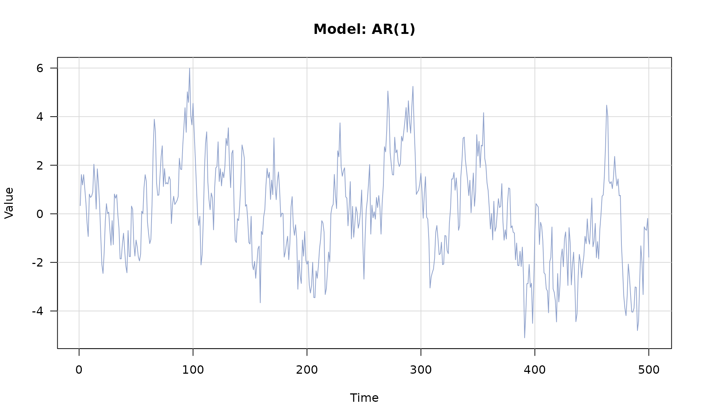
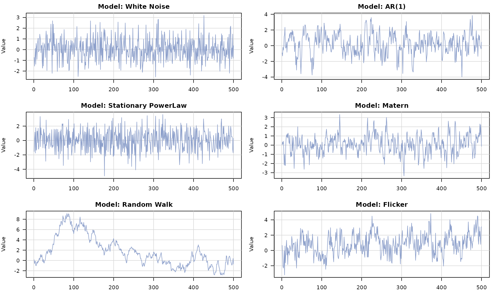
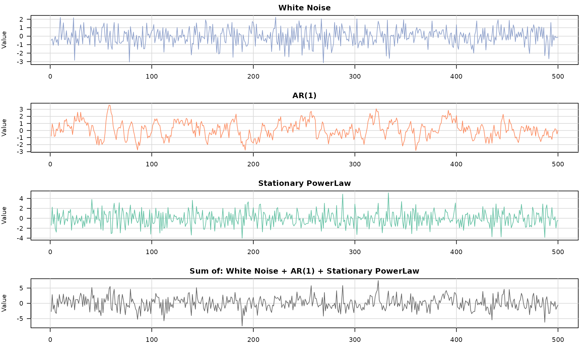
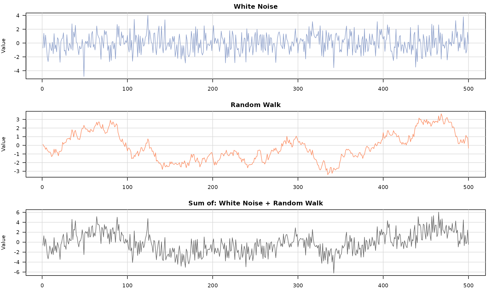
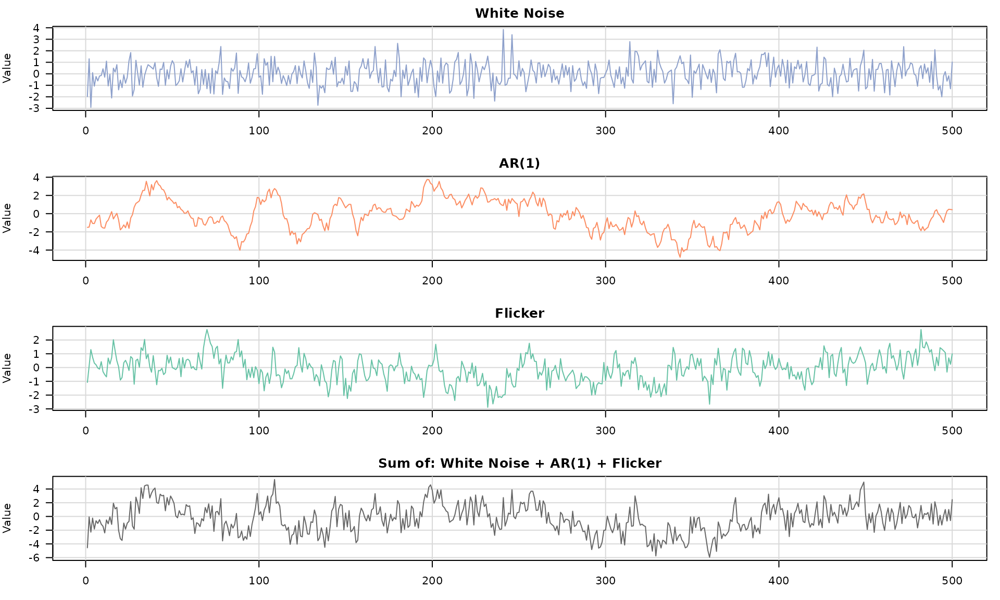
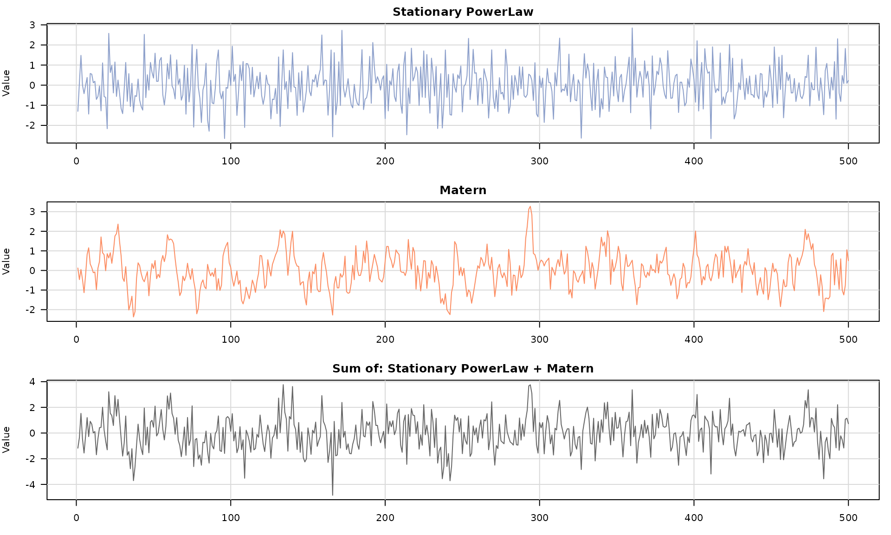

This vignette shows how to build stochastic models, combine them with
+, generate data, and plot the results.
Available models
You can build a single stochastic process with any of the following model constructors:
-
wn()(white noise) -
ar1()(AR(1)) -
pl()(power-law) -
matern()(Matérn) -
rw()(random walk) -
flicker()(flicker / 1/f)
Each constructor returns a time_series_model object that
can be plotted or combined with others using +.
Single model generation and plotting
model_single <- ar1(phi = 0.9, sigma2 = 1)
series_single <- generate(model_single, n = 500)
plot(series_single)
The generated object is a generated_time_series with a
numeric series in $series:
head(series_single$series)## [1] 0.3362423 1.6150311 1.1883829 1.6127387 1.0371249 0.4571655Generate and plot each base model
base_models <- list(
wn(sigma2 = 1),
ar1(phi = 0.7, sigma2 = 1),
pl(kappa = 0.3, sigma2 = 2),
matern(sigma2 = 1, lambda = 0.5, alpha = 1.0),
rw(sigma2 = 0.2),
flicker(sigma2 = 1)
)
par(mfrow = c(3, 2), mar = c(3, 4, 2, 1))
for (m in base_models) {
s <- generate(m, n = 500)
plot(s)
}
Composite models (sum of processes)
Use + to build a composite model from multiple
stochastic processes. The result is a sum_model that can be
passed to generate().
model_comp <- wn(sigma2 = 1) + ar1(phi = 0.8, sigma2 = 0.5) + pl(kappa = 0.3, sigma2 = 2)
series_comp <- generate(model_comp, n = 500)
plot(series_comp)
More composite model examples
comp_models <- list(
wn(sigma2 = 2) + rw(sigma2 = 0.1),
wn(sigma2 = 1) + ar1(phi = 0.95, sigma2 = 0.3) + flicker(sigma2 = 0.5),
pl(kappa = 0.4, sigma2 = 1) + matern(sigma2 = 0.8, lambda = 0.6, alpha = 1.2)
)
par(mfrow = c(3, 1), mar = c(3, 4, 2, 1))
for (m in comp_models) {
s <- generate(m, n = 500)
plot(s)
}


The composite output is a
generated_composite_model_time_series with:
-
series(the total sum) -
components(a list of each component series) -
model(names of each component)
names(series_comp)## [1] "series" "components" "n" "model" "parameters"